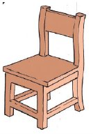
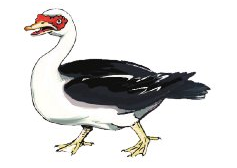
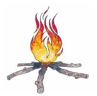
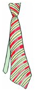
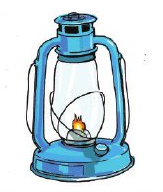
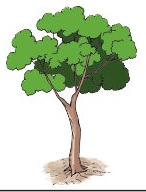

Zoezi la pili
Andika majina ya picha hizi kwenye daftari.






Andika jibu kwa mkono katika sehemu hii.
Andika majina ya picha hizi kwenye daftari.






Andika jibu kwa mkono katika sehemu hii.